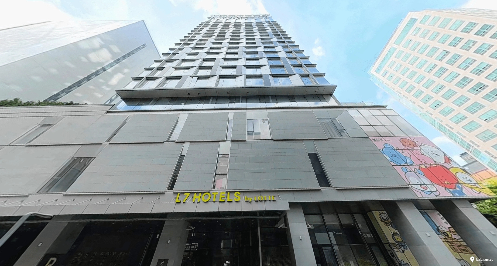
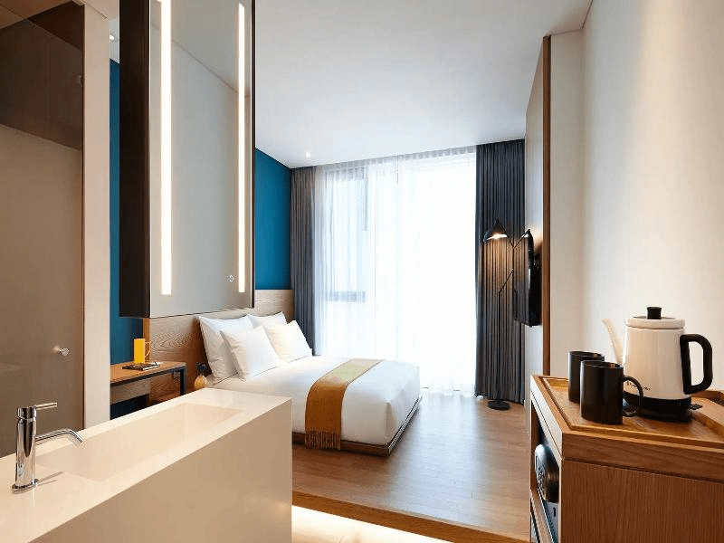

L7 HONGDAE by LOTTE HOTELS


L7 HONGDAE stayed on our list because it is one of the easiest all-round Hongdae choices. The main streets, cafés and shopping are close, while the hotel still feels like a proper stay rather than somewhere chosen only for price or airport access.
From Incheon Airport, you can take the all-stop AREX to Hongik University Station and walk to the hotel. Airport Limousine 6002 is another option in Hongdae, which can be useful when you have larger luggage and would rather avoid moving through a large station. For everyday travel, Line 2 makes it straightforward to head toward Euljiro, Seongsu and the Gangnam side of Seoul.
The compromise is the location itself. You are close to one of Hongdae’s busiest areas, so travelers who put a very quiet night above convenience may prefer a stay farther from the main streets.